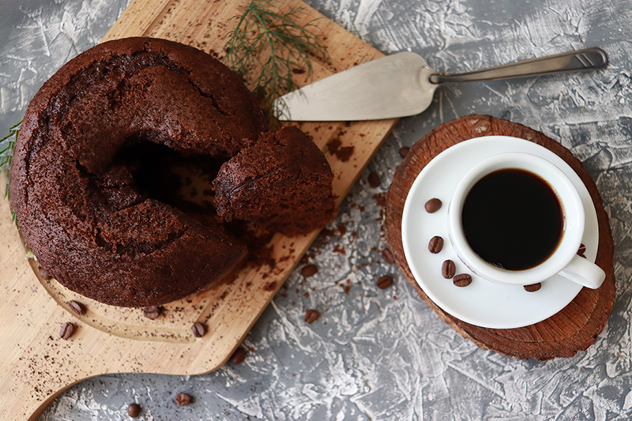

Arroz de Couve-Flor

- Arroz
- Couve-Flor
- Cebola Média
- Azeita
Deixe a couve-flor picada.Adicione ingredientes e refogue bem. Adicione sal, tampe a panela e deixe cozinhar.
Bolo de Café
- Farinha de trigo
- Açucar
- Café Coado
- Chocolate em Pó
- Ovos
Bata o açucar, as gemas e o café. Adicione farinha e chocolate e mexa bem. Bata as claras e junte à mistura.
Coxinha de Brigadeiro
- Leite condensado
- Chocolate em Pó
- Manteiga
- Morango
- Chocolate Granulado
Junte o leite condensado, chocolate em pó e manteiga.Aqueça no fogo baixo.Envolva os morangos e passe no granulado